PyQt5 является одним из наиболее часто используемых модулей для создания GUI приложений в Python, и это связанно с его простотой, о которой вы узнаете далее.
Еще одна замечательная особенность, которая вдохновляет разработчиков пользоваться PyQt5 – это PyQt5 Designer, благодаря которому можно создавать сложные GUI приложения достаточно быстро. Вам нужно только перетаскивать свои виджеты для создания собственной формы. У нас есть готовый сборник 54 уроков по другому фреймворку wxPython.
Готовые уроки по PyQt5
- Создаем простой калькулятор в PyQt5
- Создаем игру Сапёр на PyQt5
- История курса рубля на PyQt5 + XML от ЦБ РФ
Другие фреймворки
В данном руководстве по PyQt5, я буду использовать Python 3.6 на Ubuntu и предположение, что вы уже имеете базовое представление о Python.
Звучит замечательно! Начнем с установки PyQt5, и затем перейдем к тому, как разрабатывать GUI приложение с примерами.
Краткое содержание
- 1 Установка PyQt5
- 1.1 Установка PyQt5 через pip
- 1.2 Установка PyQt5 из исходников на Linux
- 1.3 Установка PyQt5 из исходников на Windows
- 2 Устанавливаем PyQt5 Designer
- 2.1 Где находится дизайнер PyQt5?
- 3 Как использовать дизайнер PyQt5
- 4 Разница между QDialog, QMainWindow, и QWidget
- 5 Загрузка .ui против конвертации .ui в .py
- 5.1 Загрузка файла .ui в ваш код Python
- 5.2 Конвертация файла .ui в .py file при помощи pyuic5
- 6 Виджет QLabel
- 6.1 Меняем шрифт QLabel
- 6.2 Меняем размер QLabel
- 6.3 Меняем текст в QLabel
- 7 Виджет QLineEdit
- 7.1 Метод setStyleSheet()
- 8 Виджет QPushButton
- 9 Визуальный редактор signal/slot
- 10 Как испускать сигналы в PyQt5
- 10.1 Как использовать сигнал в PyQt5
- 10.2 Переопределение сигнала (события) в PyQt5
- 11 Виджет QComboBox
- 11.1 Получаем все элементы из QComboBox
- 11.2 Выбор одного элемента из QCombobox
- 12 QTableWidget
- 12.1 Очистка содержимого QTableWidget
- 12.2 Заполнение QTableWidget из кода
- 12.3 Делаем QTableWidget нередактируемым (только для чтения)
- 12.4 Заголовок для столбцов в QTableWidget
- 12.5 Как сортировать QTableWidget
- 12.6 Добавляем QComboBox в QTableWidget
- 12.7 QProgressBar в QTableWidget
- 13 Компиляция Python приложения
Установка PyQt5
Существует две версии PyQt5: коммерческая и бесплатная версия GPL, которой мы будем пользоваться в этом руководстве.
Есть два способа установки PyQt5:
Установка PyQt5 через pip
Чтобы установить PyQt5 при помощи pip, выполните следующую команду:
Чтобы убедиться в том, что установка прошла успешно, запустите следующий код:
Если не возникло ни одной ошибки, это значит, что вы успешно установили PyQt5. В случае, если ошибки возникли, возможно это связанно с тем, что вы используете версию Python, которая не поддерживается.
Установка PyQt5 из исходников на Linux
Для установки PyQt5 из исходника, вам нужно сделать следующее:
- Установить SIP;
- Скачать исходник PyQt5;
- Настроить и установить.
Как вы возможно знаете, PyQt5 связывает Python с популярной библиотекой Qt, которая написана на С++.
Инструмент, который создает эту связь, называется SIP. Так что для установки PyQt5 из исходника, вам для начала нужно установить SIP.
Для установки SIP, запустите следующую команду:
Теперь вы можете загрузить и установить исходник PyQt5.
Исходники
Скачать исходник PyQt5 можно отсюда: https://www.riverbankcomputing.com/software/pyqt/download5
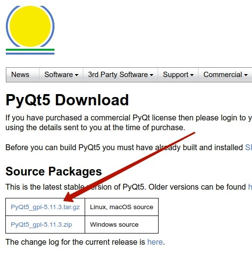
Внимание: На момент прочтения статьи возможно появилась новая версия которая отличается от той что в скрине. Версия на текущий момент 5.11.3, вы должны самостоятельно скопировать ссылку с сайта и предоставить её в wget. Заметьте, что обновить версию придется во всех ниже предоставленных командах.
Мы распаковали сжатый исходник, теперь запустите следующие команды внутри корня папки:
Чтобы убедиться в том, что все прошло гладко, попробуйте импортировать модуль PyQt5 так же, как мы делали все раньше. Все должно пройти хорошо.
Установка PyQt5 из исходников на Windows
Скачивайте и распакуйте архив с сайта которого мы указали выше.

Так как SIP требует компилятор GCC, вам нужно установить MinGW, который является портом Windows для компилятора Linux, GCC.
Единственное, что нужно поменять — это момент конфигурации. Вам нужно сообщить Python о платформе.
Это можно выполнить следующим образом:
Поздравляем! Вы успешно установили PyQt5 из исходника.
Установка PyQt5 Designer
Есть два способа создания GUI приложений при помощи PyQt5:
- Дизайн виджетов при помощи кода;
- Использование PyQt5 Designer.
В этом руководстве мы используем PyQt5 Designer, который упрощает процесс на столько, что вы можете выполнить большой объем работы за секунды.
Недорого заказать услуги SMM продвижения более чем в 9 социальных сетях можно на https://doctorsmm.com/. С помощью этого сервиса можно раскрутить свою группу, страницу, сообщество или канал и набрать нужное количество подписчиков, лайков, репостов и других соцсигналов.
Дизайнер PyQt5 поставляется вместе с набором инструментов. Для его установки, вам нужно установить эти инструменты.
Где находится дизайнер PyQt5?
После удачной установки, вы можете найти дизайнер PyQt5 здесь:
Кстати, если вы установили только для своего текущего пользовательского аккаунта, вы найдете дизайнер PyQt5 вот здесь:
Вы можете создать короткий путь для него, вместо того, чтобы постоянно переходить к этому расположению для запуска дизайнера PyQt5.
Как использовать дизайнер PyQt5
Откройте designer.exe и увидите диалоговое окно, спрашивающее о том, какую форму шаблона вы предпочитаете.
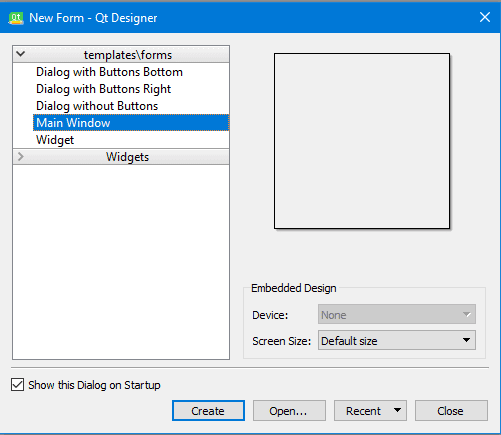
Существует пять видов доступных шаблонов:
- Диалоговое окно с кнопками внизу (Dialog with Buttons Bottom): создает форму с кнопками ОК и Cancel в правом нижнем углу формы.
- Диалоговое окно с кнопками справа (Dialog with Buttons Right): создает форму с кнопками OK и Cancel в верхнем правом углу формы.
- Диалоговое окно без кнопок (Dialog without Buttons): создает пустую форму;
- Главное окно (Main Window): создает окно с панелью меню и набором инструментов. Унаследовано из QmainWindow;
- Виджет (Widget): создает виджет, наследуемый из класса Qwidget. Отличается от диалоговых шаблонов тем, что они наследуются из класса QВialog
Итак, у нас есть три типа шаблонов. В чем между ними разница?
Разница между QDialog, QMainWindow, и Qwidget
- QWidget – это базовый класс для всех GUI Элементов в PyQt5;
- QDialog используется при запросе чего-либо у пользователя, например, запросы о принятии или отклонении чего-нибудь. Основан на Qwidget.
- QMainWindow – самый большой шаблон, где вы можете разместить вашу панель инструментов, меню, статус и другие виджеты. Не имеет встроенных кнопок разрешения, таких как в QDialog.
Загрузка .ui против конвертации .ui в .py
В данном руководстве мы используем PyQt5 Designer, но перед тем, как мы пойдем дальше, давайте рассмотрим, как еще мы можем использовать сгенерированный файл из PyQt5 Designer.
Нам нужно открыть PyQt5 Designer, выбрать шаблон Main Window и нажать кнопку create.
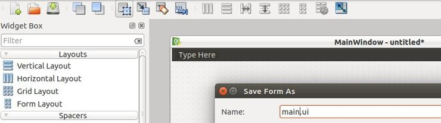
Далее в файловом меню (File), нажимаем сохранить. PyQt5 Designer экспортирует вашу форму в XML с расширением .ui.
Для использования этого дизайна, у вас есть два способа:
- Загрузить файл .ui в ваш код Python;
- Конвертировать файл .ui в файл .py при помощи pyuic5;
Загрузка .ui файла в ваш код Python
Чтобы загрузить файл .ui в ваш код Python, вы можете использовать функцию loadUI() из uic вот так:
Если вы запустите код, вы увидите окно, в котором есть только ярлык.
Это значит, что ui файл успешно загрузился!
Мы используем sys.exit(app.exec()) вместо использования app.exec() напрямую, чтобы выслать правильный код статуса, родительский процесс, или процесс вызова.
Если вы использовали app.exec() напрямую, приложение отправит ноль, что говорит об успехе, и это произойдет даже если приложение упадет.
Конвертация файла .ui в файл .py при помощи pyuic5
Давайте попробуем еще один способ и конвертируем файл .ui в код Python:
Да! Был создан новый файл под названием mydesign.py. Теперь, импортируем этот файл, чтобы показать его в окне.
Если запустите этот код, вы должны увидеть то же окно, что было в первом методе.
Преимущество использования второго метода — это автоматическое завершение, которое выполнит IDE, так как все ваши виджеты импортированы. В то же время, пользуясь первым методом, вы просто загружаете файл .ui и вам нужно обращать внимание на названия ваших виджетов.
Еще одно преимущество использования второго метода. Скорость: вам не нужен парсинг XML для загрузки UI.
Так что мы можем сказать, что конвертация файла .ui в файл .py – безопаснее для кодинга и быстрее для загрузки.
Настало время закатить рукава и поиграть с виджетами PyQt5.
Виджет QLabel
Для внесение виджета QLabel в вашу форму, выполните следующее:
- Откройте PyQt5 Designer и выберите шаблон Main Window;
- Перетяните виджет ярлыка из бокса слева;
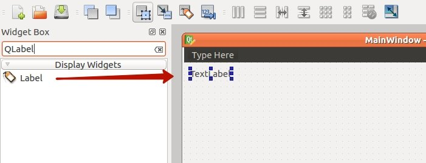
Сохраните дизайн в файл как qlabel.ui и конвертируйте его в файл qlabel.py. Теперь поработаем с ярлыком виджета при помощи кода.
Результат:
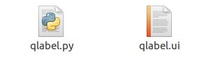
Меняем шрифт QLabel
Чтобы поменять шрифт QLabel, используйте метод setFont() и передайте ему QFont следующим образом:
После того, как запустите этот код, обратите внимание на то, что ярлык возникает некорректно, так как размер — меньше, чем размер шрифта, который мы используем. Так что нам нужно установить размер ярлыка.
Меняем размер QLabel
Чтобы поменять размер QLabel, вам нужно указать его геометрию при помощи метода setGeometry(), вот так:
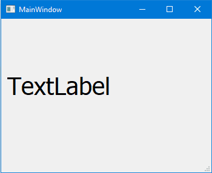
Меняем текст в QLabel
Чтобы изменить текст в QLabel, вы можете использовать метод setText(), вот так:
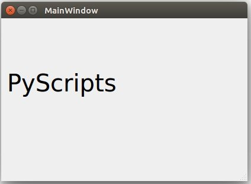
Именно на столько все просто! Давайте рассмотрим другие виджеты.
Виджет QLineEdit
Виджет QLineEdit – это редактируемое поле, где вы можете принимать данные от пользователя. LineEdit содержит множество методов, с которыми можно работать.
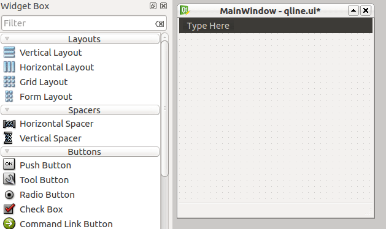
Я создам новый дизайн qline.ui, используя дизайнер PyQt5 и внесу шесть виджетов QLineEdit и экспортирую его в файл qline.py.
Cодержимое файла qline.py после конвертации:
Давайте познакомимся с методами QLineEdit:
Результат:
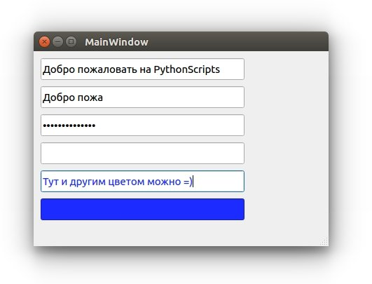
- Для 1-го QLineEdit, мы изменили текст, при помощи метода setText().
- Для 2-го QLineEdit, мы установили максимум доступных 10-и символов, так что более 10-и приниматься не будут.
- Для 3-го QLineEdit, мы установили режим пароля, так ваши введенные данные отображаются как звездочки;
- Для 4-го QLineEdit, мы установили режим «только для чтения», так что редактировать контент не представляется возможным.
- Для 5-го QLineEdit мы изменили цвет шрифта при помощи метода setStyleSheet() и указали нужный цвет с помощью CSS (как и для обычной веб страницы).
- Для 6-го QLineEdit мы изменили цвет фона при помощи метода setStyleSheet() и CSS.
Метод setStyleSheet()
Метод setStyleSheet() может быть использован с виджетами PyQt5 для изменения стилей.
Вы можете изменить следующие параметры, пользуясь методом setStyleSheet():
- Размер и тип шрифта;
- Цвет текста;
- Цвет заднего фона;
- Цвет верхней границы;
- Цвет нижней границы;
- Цвет левой границы;
- Цвет правой границы;
- Цвет выделения;
- Цвет выделения заднего фона.
Это наиболее важные значения, которые можно передать методу setStyleSheet().
Виджет QPushButton
Большая часть ваших программ Python будут содержать виджет QPushButton. Вы нажимаете кнопку, и какой-нибудь код выполняется.
Если у вас имеется опыт в программировании, вы могли слышать об обработке событий, где вы взаимодействуете с виджетом и функция выполняется.
Суть идеи сохранилась такой же и в PyQt5, только определения немного отличаются.
Событие клика в PyQt5 называется сигналом, и метод, который будет выполняться, называется слот.
Так что при нажатии на QPushButton, сигнал издается. Названием сигнала в данном случае, является clicked().
Чтобы связать сигнал со слотом, вам нужно использовать метод connect(), что вы сейчас и увидите.
Этот процесс обработки события продолжает работать до тех пор, пока вы не закроете вашу форму, или главный виджет.
Давайте создадим форму myform.ui при помощи QLabel и QPushButton и экспортируем её в файл myform.py.
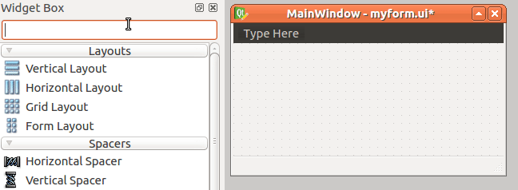
Экспортируем myform.ui в myform.py
Сейчас, мы подключим сигнал clicked() к слоту при помощи метода connect(), вот так:
Здесь, btnClicked – это слот, или функция, которая будет выполнена после того, как вы кликните на QPushButton.
Итак, ваш код будет выглядеть следующим образом:
Результат:
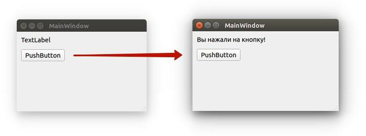
Замечательно!
Визуальный редактор слота/сигнала
Мы видели, как подключать сигнал виджета к слоту при помощи метода connect(), но это не единственный способ.
На самом деле, для каждого виджета есть предопределенные слоты. Вы можете связать сигнал с любым предопределенным слотом, без необходимости кодить в дизайнере PyQt5.
Перетяните QPushButton и QLineEdit в вашу форму.
Нажмите F4 и перетяните курсор из QPushButton и отпустите его в верхней части QLineEdit. Чтобы вернуться в обычный режим, нажмите на F3.
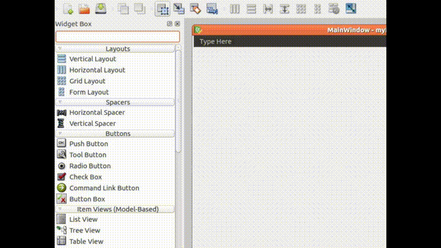
Благодаря этому появится редактор сигнала/слота.
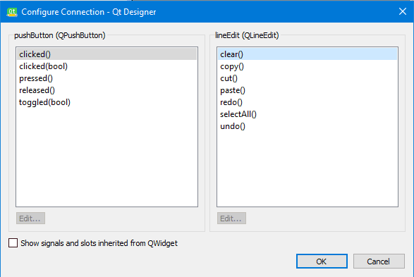
Слева находятся предопределенные сигналы, справа — предопределенные слоты. Скажем, нам нужно подключить сигнал clicked() с слотом «очистки содержимого«.
Выберите сигнал clicked слева и выберите clear слот справа и нажмите OK.
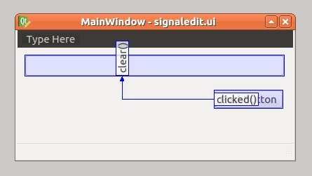
После выполнения подключений ваших сигналов и слотов, вы можете выйти из этого режима, нажав ESC, или F3.
Сейчас, если вы запустите эту форму, и нажмете QPushButton, то любой текст в QLineEdit будет очищен. Вы можете редактировать или удалять эти связи в панели редактора сигналов и слотов.
Сохраните форму как signaledit.ui и конвертируем её в signaledit.py:
Полученный файл импортируем в наш код:
Результат:
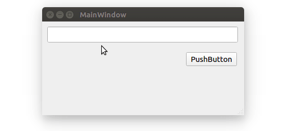
Как выпускать сигналы в PyQt5
Мы увидели, как работают сигналы и слоты. Все сигналы, с которыми мы работали, являются предопределенными для нас.
Но что на счет выпуска собственного сигнала?
Это очень просто! Вы можете сделать это, просто использовав класс pyqtSignal, как показано ниже:
- Определите ваше событие типом pyqtSignal;
- Вызовите метод emit() в том месте, где вы хотите, чтобы произошло событие.
Скажем, у нас есть класс nut, и мы хотим, чтобы сигнал cracked был выпущен.
Как использовать сигнал
Сейчас мы сделаем наш пример более практичным, создаем экземпляр класса nut и выпуская сигнал cracked:
Сигнал cracked успешно выпущен.
Переопределение сигнала (события) в PyQt5
Иногда нам может понадобиться переопределить поведение по умолчанию для особенных событий или сигналов.
Давайте рассмотрим практичный пример для этого случая. Если вы хотите закрыть окно, когда пользователь нажимает на определенную клавишу, вы можете переопределить keyPressEvent внутри вашего главного окна следующим образом:
Теперь, если пользователь нажмет клавишу F12, главное окно будет закрыто.
Здесь мы переопределили основной сигнал нажатия в главном окне и закрыли это окно.
Виджет QComboBox
Вместо того, чтобы разрешить пользователю вводить свои данные в QLineEdit, или любом другом редактируемом виджете, мы можем использовать виджет QCombobBox, чтобы дать список данных, из которого он сможет выбирать.
Давайте перетянем QComboBox в нашу форму и взглянем на её методы.
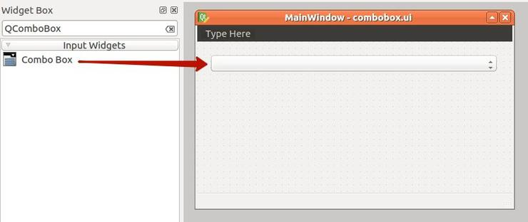
Сохраняем файл как combobox.ui и конвертируем его в combobox.py:
Если вы запустите приложение сейчас, обратите внимание на то, что QComboBox — пустой. Чтобы вносить объекты в QComboBox, используйте метод addItem():
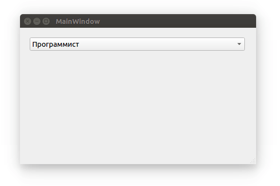
Получаем все элементы из QComboBox
Нет прямого способа получить все значения из QComboBox, но вы можете применить цикл Python для этой цели. Для этого подойдет функция range.
Выбор одного элемента из QCombobox
Чтобы выбрать элемент из QComboBox, у вас есть два метода:
Обратите внимание на то, что при выборе элемента по тексту, следует убедиться в том, что вы вводите правильный текст. В противном случае, QComboBox останется на первом элементе.
QTableWidget
Если вы хотите просмотреть вашу базу данных в формате таблицы, в PyQt5 предоставляется QTableWidget как раз для этой цели.
QTableWidget состоит из клеток, каждая клетка — экземпляр класса QTableWidgetItem.
Давайте создадим форму, которая содержит QTableWidget и QPushButton.
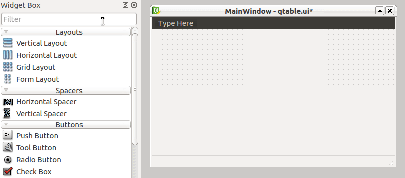
Перетяните QTableWidget и QPushButton из PyQt5 Designer. После этого, сохраните форму как qtable.ui и конвертируйте дизайн в qtable.py.
Чтобы добавлять ряды в QTableWidget, вы можете использовать метод setRowCount().
Для внесения столбцов в QTableWidget, воспользуйтесь методом setColumnCount().
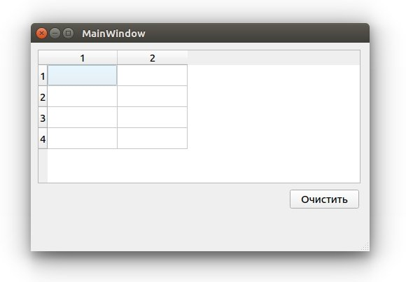
Теперь вы можете писать текст вручную внутри клеток QTableWidget.
Очистка содержимого QTableWidget
Чтобы очистить содержимое QTableWidget, вы можете использовать метод clear, вот так:
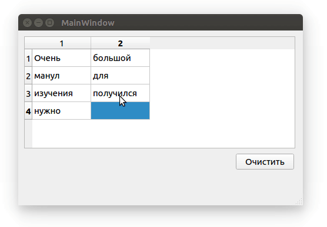
Заполнение QTableWidget из кода
Чтобы заполнить QtableWidget программно, вам нужно использовать метод setItem() для каждого объекта QtableWidgetItem.
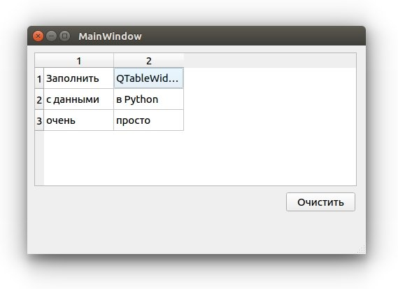
- Сначала мы создали список трех кортежей Python;
- Внутри конструктора главного окна, мы установили количество столбцов и рядов;
- Далее мы перебираем список и получаем каждый кортеж в списке, для заполнения клеток таблицы, при помощи метода setItem()
- Наконец, мы показываем главное окно.
Делаем QTableWidget нередактируемым (только для чтения)
Вам может не понравится то, что клетки в вашей таблице могут быть отредактированы пользователем в том или ином случае. Например, при отображении нередактируемых данных. В этом случае возможность редактирования не имеет никакого смысла.
Чтобы сделать QTableWidget нередактируемым, вы можете использовать метод setFlags(), чтобы сделать каждый QTableWidgetItem доступным только для чтения.
Вам нужно установить флажки, перед тем как настраивать содержимое вашей клетки.
Таким образом, ваш код будет выглядеть вот так:
Теперь, если вы попробуете отредактировать какую-либо клетку — у вас не выйдет, так как QtableWidgetItem теперь нельзя редактировать
Заголовок для столбцов в QTableWidget
До этого момента, названия столбцов QTableWidget были числами. Как на счет того, чтобы поменять названия столбцов на что-нибудь другое?
Чтобы задать текст заголовкам QTableWidget, вы можете использовать метод setHorizontalHeaderLabels(), вот так:
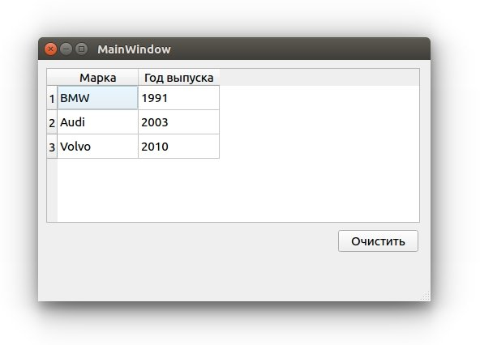
Таким же образом, вы можете менять заголовок ряда, при помощи метода setVerticalHeaderLabels():
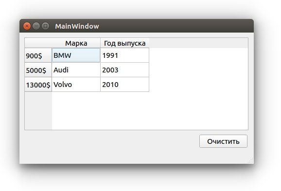
Как сортировать QTableWidget
Вы можете сделать ваш QTableWidget сортируемым, при помощи метода setSortingEnabled().
Теперь, если пользователь нажмет на любой заголовок столбца, он может сортировать данные в порядке убывания, или возрастания.
Вы можете использовать этот метод перед, или до наполнения QTableWidget данными.
Что на счет сортировки в QTableWidget, но только для определенного столбца?
Вы можете использовать метод sortByColumn(), и указать индекс столбца и порядок сортировки, вот так:
Кстати, вы можете использовать метод sortItems() для сортировки QTableWidget в возрастающем порядке по умолчанию.
Или вы можете определить свой порядок сортировки:
Помните, что если вы хотите сортировать ваши столбцы программно, вам нужно использовать методы сортировки после заполнения QTableWidget данными, иначе они не будут в нужном вам порядке.
Добавляем QComboBox в QTableWidget
У вас может появится задача, чтобы пользователь выбирал значение внутри QTableWidget, вместо ввода текста.
Как на счет того, чтобы добавить QComboBox в QTableWidgetItem?
Чтобы добавить QComboBox внутрь QTableWidgetItem, вы можете использовать метод setCellWidget():
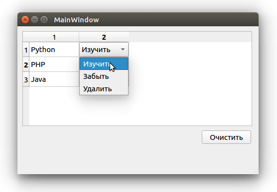
Отлично!
Не ограничивайте себя в воображении и попробуйте вставлять различные виджеты, такие как QСheckbox, или даже QProgressBar.
QProgressBar в QTableWidget
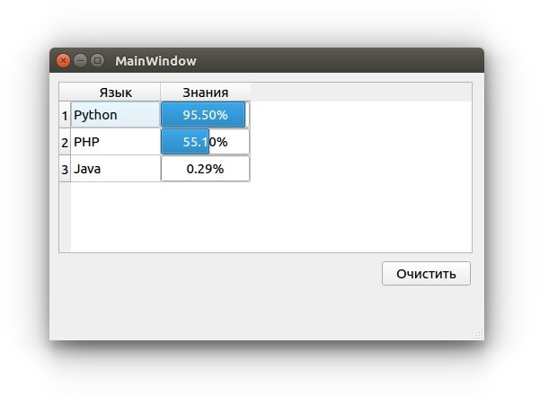
Указанный выше код будет таким же, за исключением строки, где вы создаете QСomboBox, здесь вы внесете тот виджет, который вам нужен.
Единственное ограничение — это ваше собственное воображение!
Компиляция Python приложения
Вы можете конвертировать ваши программы Python в бинарные исполняемые, и для этого имеется множество инструментов.
Лично я предпочитаю pyinstaller, который подходит для упаковки кода Python в исполняемый файл под Windows, Mac OS X, Solaris, Linux и FreeBSD. Все это будет поддерживаться 32 и 64-битной архитектурой.
Лучшая в pyinstaller для нас — это наличие полной поддержки для PyQt5.
Отлично! Для начала, установим pyinstaller:
После проведения установки, вы можете конвертировать программы Python следующим образом:
Ваш исполняемый файл будет создан в папке под названием dist в директории вашей программы Python.
Как вы могли догадаться, вместе с исполняемым файлом будет генерироваться множество зависимостей. Как сделать из этого один файл?
Вы можете создать один исполняемый файл. Вот так:
Каждый раз, когда вы запускаете ваш исполняемый файл, будет возникать окно, как его спрятать?
Вы можете использовать флажки -w или –noconsole, чтобы спрятать окно консоли:
Эта опция доступна только для Windows и Mac OS X.
Pyinstaller предоставляет множество вариантов для упаковки вашего приложения, чтобы увидеть полный список, используйте –help:
Я старался сделать все на столько простым, на сколько это возможно. Надеюсь, это руководство оказалось для вас полезным.
Спасибо.
Являюсь администратором нескольких порталов по обучению языков программирования Python, Golang и Kotlin. В составе небольшой команды единомышленником, мы занимаемся популяризацией языков программирования на русскоязычную аудиторию. Большая часть статей была адаптирована нами на русский язык и распространяется бесплатно.
E-mail: vasile.buldumac@ati.utm.md
Образование
Universitatea Tehnică a Moldovei (utm.md)
- 2014 — 2018 Технический Университет Молдовы, ИТ-Инженер. Тема дипломной работы «Автоматизация покупки и продажи криптовалюты используя технический анализ»
- 2018 — 2020 Технический Университет Молдовы, Магистр, Магистерская диссертация «Идентификация человека в киберпространстве по фотографии лица»